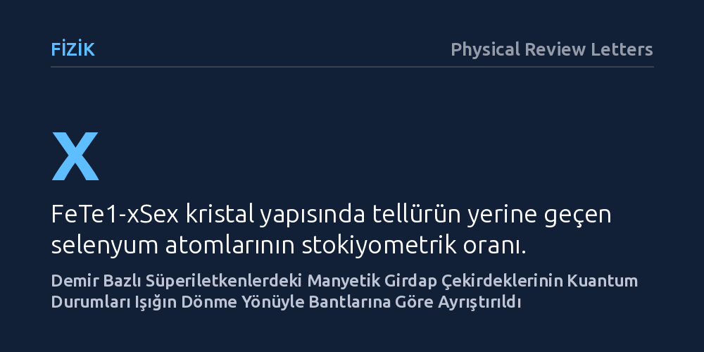

FIZIK · Physical Review Letters · 2026-10-25
Araştırmacılar, demir bazlı FeTe1-xSex süperiletken ince filmlerindeki manyetik girdapların içinde hapsolan kuantum durumlarının dinamiklerini terahertz spektroskopisiyle inceledi. Polarize terahertz ışığı kullanarak elektron ve delik bantlarına ait kuantum uyarılmalarının dönme yönünü ve ömürlerini birbirinden bağımsız olarak ayrıştırmayı başardılar.
Bu bulgu, süperiletkenlerin içindeki manyetik girdap çekirdeklerinde saklanan karmaşık kuantum durumlarının birbirine karışmadan, ışığın dönme yönü kullanılarak bant seviyesinde ölçülebileceğini gösteriyor.

Tip-II süperiletkenler, elektrik akımını sıfır dirençle iletebilen özel kuantum malzemeleridir. Ancak bu malzemelere belirli bir eşiğin üzerinde manyetik alan uygulandığında, süperiletkenlik tamamen yok olmak yerine manyetik alanın malzemenin içine küçük ipliksi kanallar halinde sızmasına izin verir. Vorteks adı verilen bu mikroskobik manyetik girdapların tam merkezinde süperiletkenlik yerel olarak kaybolur ve kuantum mekaniği kuralları gereği hapsolmuş parçacık benzeri uyarılmalar ortaya çıkar. Fizikte Caroli–de Gennes–Matricon (CdGM) durumları olarak adlandırılan bu seviyeler, süperiletken malzemenin mikroskobik iç dinamiklerini ve enerji kayıp mekanizmalarını anlamak için kritik birer penceredir.
Özellikle demir bazlı FeTe1-xSex gibi çok bantlı süperiletkenlerde elektronların hareketi birden fazla enerji bandı üzerinden gerçekleşir; yani hem elektron benzeri hem de delik benzeri yük taşıyıcılar aynı anda rol oynar. Şimdiye kadar araştırmacılar, manyetik girdapların merkezinde hapsolan bu kuantum durumlarının hangi enerji bandından kaynaklandığını ve uyarılmaların dönme yönü (helisite) dinamiklerini deneysel olarak birbirinden temiz bir şekilde ayırt etmekte zorlanıyordu. Temel soru şuydu: Farklı bantlardan doğan bu helisel kuantum durumlarını birbirine karıştırmadan, dinamik olarak doğrudan gözlemlemek mümkün müydü?
Araştırmacılar bu soruyu yanıtlamak için terahertz frekans bandında çalışan Faraday manyeto-optik spektroskopisi yöntemine başvurdu. Deneylerde, atomik düzeyde düzenli büyütülmüş epitaksiyel FeTe1-xSex ince filmleri kullanıldı. Bu filmler, süperiletkenlik tutarlılık boyutu kısa olan ve saçılmaların sınırlı kaldığı 'orta derecede temiz limit' rejimindeki düğümsüz çok bantlı süperiletkenler olarak hazırlandı. Selenyum ve tellür oranları sistematik olarak değiştirilerek (x ikamesi) malzemenin farklı varyasyonları incelendi.
Deneyin kilit adımı, sağa veya sola dairesel polarize edilmiş terahertz ışınımının kullanılmasıydı. Manyetik alan altındaki süperiletken filme gönderilen polarize ışık, girdap çekirdeğindeki uyarılmalarla etkileşime girdiğinde yalnızca belirli bir dönme yönüne (kiraliteye) sahip kuantum geçişlerini uyarır. Araştırmacılar, polarizasyon seçici bu optik geçişler sayesinde manyetik girdap merkezindeki kuantum sıçramalarını ilk kez doğrudan takip etti.
Ölçümler sonucunda, elektron benzeri ve delik benzeri bantların zıt helisiteye (dönme yönüne) sahip radyasyonla rezonansa girdiği net biçimde belirlendi. Sağa dönen ışık belirli bir banttaki kuantum durumları arasında geçiş sağlarken, sola dönen ışık diğer banttaki durumları uyardı. Bu polarizasyon seçiciliği, araştırmacıların girdap çekirdeğindeki kuantum uyarılmalarını hangi enerji bandına ait olduğuna göre ayrıştırmasını sağladı.
Bu doğrudan ayrıştırma sayesinde ekip; yarı-parçacık yaşam sürelerini, girdap kütlelerini, tutarlılık uzunluklarını ve üst kritik manyetik alan değerlerini her bir bant için bağımsız olarak hesapladı. Ayrıca selenyum oranı x değiştikçe bu parametrelerin nasıl bir evrim izlediği haritalandırıldı ve CdGM durumlarının beklenenden daha uzun ömürlü olduğu tespit edildi.
Elde edilen bulgular, demir bazlı süperiletkenlerde çok bantlı Caroli–de Gennes–Matricon durumlarının varlığına dair doğrudan dinamik kanıt sunmaktadır. Daha önce yalnızca tünelleme mikroskobu gibi statik araçlarla enerji seviyesi olarak taranabilen bu uyarılmalar, terahertz manyeto-optik yöntemle kiralite ve zaman boyutunda dinamik bir yapı olarak incelenebilir hale gelmiştir.
Çalışmanın ortaya koyduğu yöntem, yalnızca FeTe1-xSex alaşımıyla sınırlı kalmayıp diğer karmaşık ve topolojik süperiletkenlerin mikro yapısını anlamak için de yeni bir deneysel araç sunmaktadır. Manyetik girdap çekirdeklerindeki kuantum dinamiklerinin netleşmesi, süperiletken malzemelerin yüksek manyetik alanlardaki davranışlarını ve enerji kayıp sınırlarını öngörmede temel fiziksel katkı sağlamaktadır.